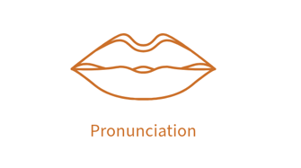

Hints & Vocab
Thorough · Through · Though · Thought

Thorough
Meaning: complete (adjective) · thoroughly (adverb)
Pronunciation note: “tho / rough”
US
UK
AUS
Common collocations (PTE + academic English)
a thorough analysis
a thorough examination
a thorough understanding
a thorough assessment
Through
Meaning: from beginning to end, during a process (preposition)
“Throughout” is a more emphasised version (common in academic English).
US: through
She looked through the window as he walked through the door.
AUS: throughout
The students took notes throughout the lecture.
Though / Although / Even though
US: though
UK: although
AU: even though
Thought
Meaning: past of think (verb) OR a thought (noun)
Deep thought: He was lost in deep thought.
Thought process: Her thought process was logical and clear.
First thought: My first thought was to call you.
Second thought: On second thought, I decided to stay home.
Train of thought: I lost my train of thought during the meeting.
Food for thought: His comments provided much food for thought.
School of thought: There are various schools of thought on this issue.
Free thought: Free thought is essential for innovation.
When you’re ready, go back to the challenge page.